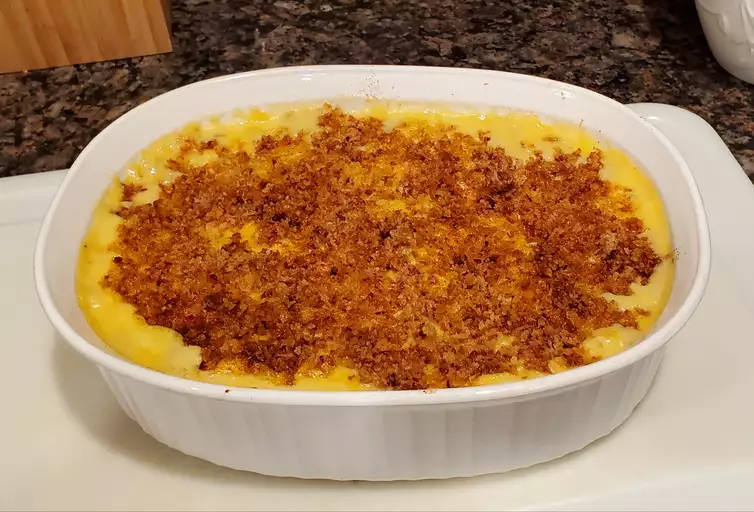

Homemade Mac and Cheese

Description
This mac and cheese recipe with a buttered bread crumb topping is creamy and comforting.
It's easy to make the cheese sauce from scratch on your stovetop, starting with a roux
and adding milk, Cheddar, and Parmesan, resulting in a rich, decadent sauce that coats
every nook and cranny of the noodles.
Serves 4 people. Total time of 55 minutes.
Ingredients
Macaroni and Cheese:
- 8 oz uncooked elbow macaroni
- ¼ cup salted butter
- 3 Tbsp all-purpose flour
- 2 ½ cups milk, or more as needed
- 2 cups shredded sharp Cheddar cheese
- ½ cup finely grated Parmesan cheese
- salt and ground black pepper to taste
Bread Crumb Topping:
- 2 Tbsp salted butter
- ½ cup dry bread crumbs
- 1 pinch ground paprika
Steps
- Preheat the oven to 350° F. Grease an 8-inch square baking dish
- Make the macaroni and cheese:
Bring a pot of lightly salted water to a boil. Add macaroni and simmer,
stirring occasionally, until tender yet firm to the bite, about 8 minutes;
it will finish cooking in the oven. Drain and transfer to the prepared baking dish.
- While the macaroni is cooking, melt 1/4 cup butter in a medium skillet over low heat.
Whisk in flour and stir until the mixture becomes paste-like and light golden brown,
3 to 5 minutes.
- Gradually whisk 2 1/2 cups milk into the flour mixture, and bring to a simmer.
Stir in shredded Cheddar and finely grated Parmesan cheeses; season
with salt and pepper. Cook and stir over low heat until cheese is melted
and sauce has thickened, 3 to 5 minutes, adding up to 1/2 cup
more milk if needed. Pour cheese sauce over macaroni and stir until well combined.
- Make the bread crumb topping:
Melt 2 tablespoons butter in a skillet over medium heat. Add bread crumbs; cook
and stir until well coated and browned. Spread bread crumbs over macaroni and
cheese, then sprinkle with paprika.
- Bake in the preheated oven until topping is golden brown and macaroni and cheese is bubbling,
about 30 minutes.